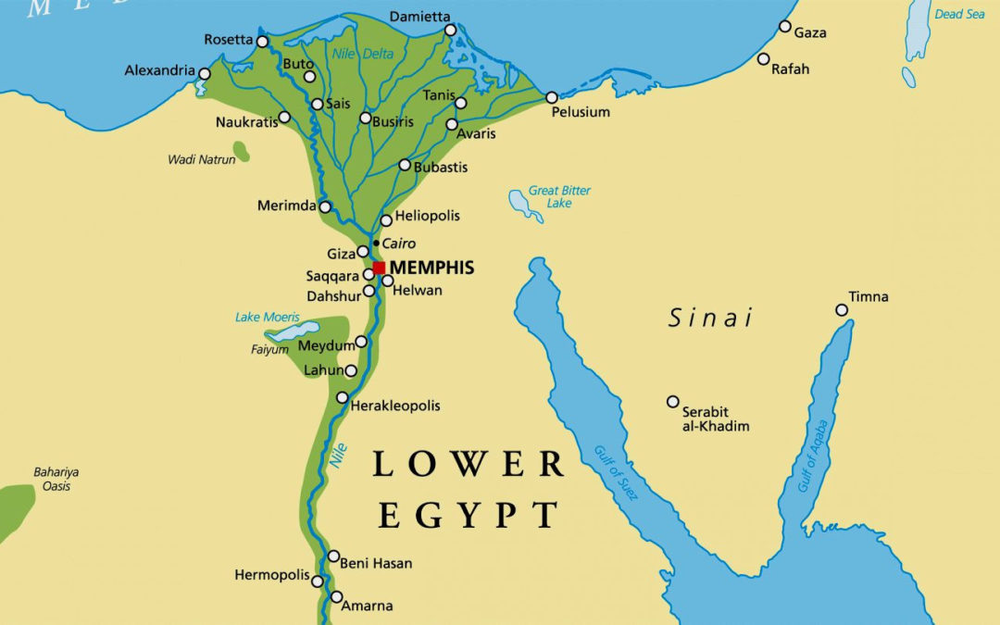
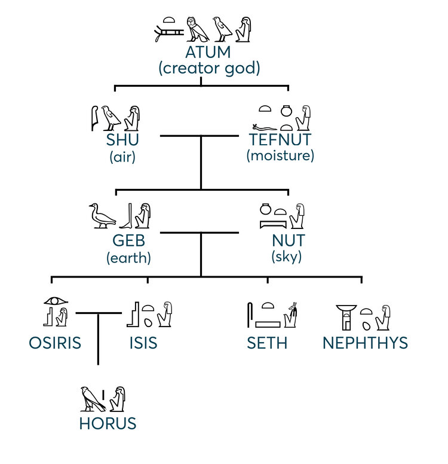
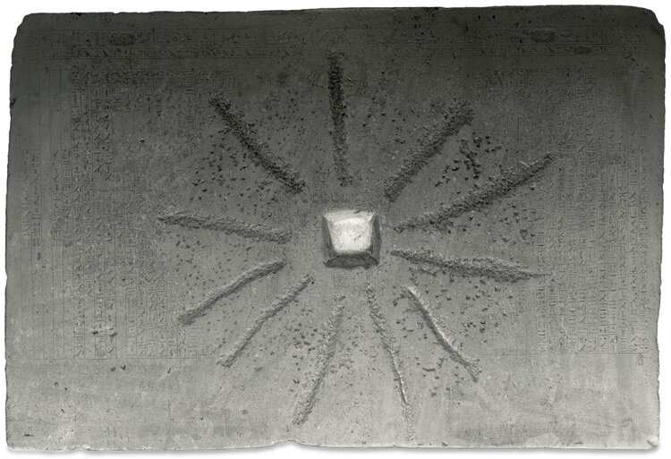

Origin Stories
Egyptian Origin Stories
The Egyptians have slightly different creation/origin stories based on the location.

Hermopolis (Middle Egypt):

The creation story known by those in Hermopolis goes like this:
There was a group of eight gods known as the Ogdoad, four frog headed male gods and four snake headed female gods. Water was represented by Nun and Naunet, infinity by Heh and Hauhet, darkness by Kek and Kauket, and hiddenness by Amun and Amaunet. These gods existed in watery chaos before the creation happened. It was believed that a cosmic egg came from those gods and that the egg would contain the deity responsible for creating the rest of the world. This led to the first event of earth's creation, the primeval mound. The story of the cosmic egg itself differs though, some believe it was laid by a goose named “the Great Cackler” while others believe it was an ibis, a bird associated with the god Thoth. Either way, after the mound was created, a lotus blossom blooms which is a sign for the birth of a newborn sungod. "In some cases a scarab beetle emerges from the lotus. The scarab is often a solar symbol, and the texts describe how this beetle transforms into a child. When this child cried, his tears became humankind.” (glencairnmuseum). And that's how the world began, from a hermopolis point of view.
Heliopolis (Lower Egypt):

In Heliopolis there was a group of gods called the Heliopolitan Ennead. Here the creation of the world focuses on Atum (aka Re-Atum), a creator god. Similar to the Hermopolitan version of creation, there's a chaotic watery state of pre-creation. "Atum is self-created and arises in the shape of an obelisk-like pillar in Heliopolis." (glencairnmuseum) The creation starts with Atum spitting out a pair of divine beings: Shu(god of air), and Tefnut (goddess of moisture). Shu and Tefnut produce a second generation of gods, Geb (god of the earth) and Nut (the sky goddess). After those events happen, "the Egyptian cosmos comes into existence and all the elements necessary for life on earth—the sun, air, moisture, land, and sky—are now in place." (glencairnmuseum) To the left is an image that can help see the lineage of the gods.
Memphis
A third version of the creation of the cosmos can be found in a text known as the Memphite Theology. Memphis was one of the most important cities in ancient Egyptian history. Situated along the Nile at the point where the Nile River branches out into the Nile Delta, Memphis was Egypt’s first capital city. Throughout Egypt’s long history, Memphis remained an important religious and administrative center even during times when its status as the country’s capital city had shifted. According to the historian Manetho, Memphis was founded by the legendary king Menes around 3200 BCE. The divine triad who protected the city consisted of Ptah, his consort Sekhmet, and their child, Nefertem (Figure 16). Ptah was the patron deity of craftsmen, and in the Memphite version of creation he plays the role of the primary creator god (see also lead photo above). Unlike the versions of creation expressed in the Hermopolitan and Heliopolitan creation myths, which have been reconstructed from various ancient religious texts, the Memphite creation myth is preserved on a single document known as the Shabaka Stone, which is now preserved in the British Museum (Figure 17). The text inscribed on this monument relates how King Shabaka, a Nubian pharaoh of Egypt’s 25th Dynasty (705–690 BCE), found a worm-eaten papyrus in the library of the Temple of Ptah at Memphis. Realizing how important the damaged document was, Shabaka purportedly ordered that the words be carved anew in stone to preserve them. In this text Ptah (Figure 18) is credited with the creation of the world. He creates by means of thought and words: “Sight, hearing, breathing—they report to the heart, and it makes every understanding come forth. As to the tongue, it repeats what the heart has devised. Thus all the gods were born and his Ennead was completed. For every word of the god came about through what the heart devised and the tongue commanded.” The text describes how Ptah was responsible for the creation of all the gods and the establishment of their worship throughout Egypt

As we can see, there was no one single creation story in Egyptian religious tradition. There were several different ways in which the Egyptians explained the origin of the world. These various traditions were not mutually exclusive. They often complimented and intersected each other, yet distinctions can be drawn amongst the various creation myths, which helps to distinguish one from the other.